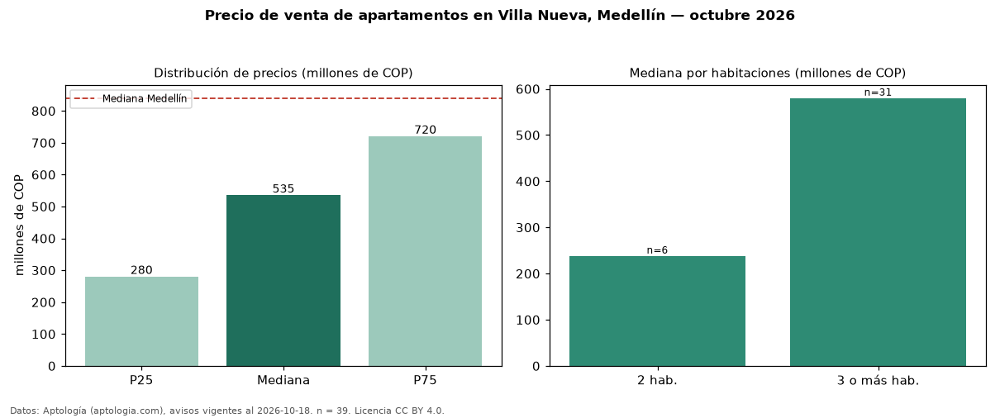

Precio de venta de apartamentos en Villa Nueva, Medellín — octubre 2026
En Villa Nueva, Medellín, la mediana de precio de venta de apartamentos es COP 535 millones, según 39 avisos vigentes. Frente a la mediana de Medellín para apartamentos (COP 840 millones), queda 36 % por debajo. Por metro cuadrado, la mediana es COP 3,96 millones/m² (n = 38 avisos con área), 47 % por debajo de Medellín (COP 7,50 millones/m²). Por precio mediano es el puesto 64 de 80 barrios de Medellín con al menos 30 avisos de apartamentos en venta (COP): entre las más económicas. La mitad central de los avisos va de COP 280 millones a COP 720 millones (razón 2,6), una dispersión alta. El área mediana anunciada es 134 m². El segmento con más oferta es el de 3 o más habitaciones (31 avisos, mediana COP 580 millones); pasar de 2 habitaciones a 3 o más habitaciones cambia la mediana +144 %. La administración mediana declarada es COP 753.000 al mes (n = 29). Datos: Aptología (aptologia.com), CC BY 4.0 — https://www.aptologia.com/venta/medellin/villa-nueva. Archivos: PDF, CSV con las cifras y gráfica PNG.

| Avisos únicos | 39 |
|---|---|
| Percentil 25 | COP 280.000.000 |
| Mediana | COP 535.000.000 |
| Percentil 75 | COP 720.000.000 |
| Mediana por m² | COP 3.963.414 |
Fuente: avisos vigentes de portales inmobiliarios recopilados por Aptología, deduplicados (mínimo 30 avisos únicos por celda). Precios pedidos, no cerrados. Fecha: 2026-10-18.